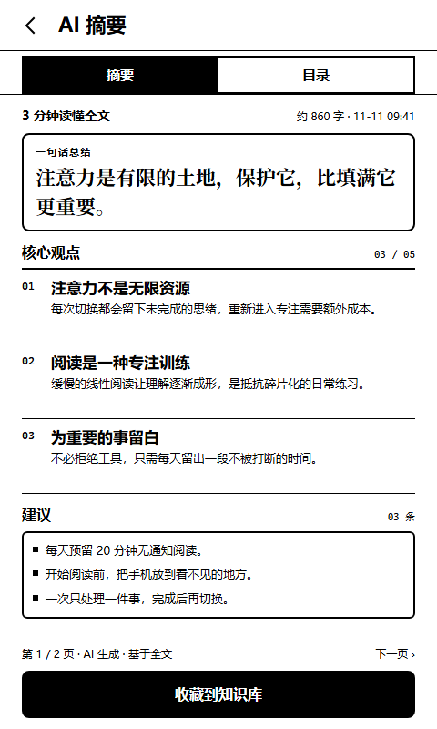

我们并没有停止阅读。恰恰相反，每天划过的文字比过去任何时候都多。但在屏幕之间来回切换时，人并不会真正节省时间。每一次打断都留下一点未完成的思绪，它们堆积起来，让下一次专注变得更难。
被打断的不是时间，是理解
阅读一段复杂的论证，需要让前一句话停留在脑子里，等下一句话来解释它。这个过程很慢，也很难察觉。它不像加载一条视频那样有明确的开始和结束，所以最容易被误以为“等会儿再看也一样”。
但理解有它的节奏。文字要求读者一行一行往前走；翻页、停顿、回看，都是思考的一部分。当阅读被切成十秒钟的片段，我们仍然能获得信息，却很难形成完整的判断。
“注意力更像一块有限的地，种下什么，就会长出什么。”
这也是为什么一块“只能阅读”的屏幕仍然有意义。它不试图比手机做更多的事。它只是把阅读从消息、通知和无限滚动里拿出来，放回一个相对完整的时间里。
AI 应该待在哪里？
AI 可以帮我们理解长文、翻译段落、整理笔记。但如果它出现在正文上方，变成一个不断弹出答案的对话窗口，阅读就会再次被打断。我们更愿意让 AI 待在阅读的边缘：选中一段文字，它才出现；需要结果时，进入独立整页；读完后，回到原来的页码。

SUMMARY / 3 MIN READ
这也是我们在设备端做的一个小决定：AI 操作只占用底栏预留的高度。它出现时，正文会重新排版，而不是被一层浮动的界面盖住。这个决定让阅读界面少了一点“智能感”，但多了一点可以持续读下去的安静。
慢一点，才能留下来
我们不认为所有人都需要一台专用的阅读设备。手机、平板和纸书都很好。但如果你发现自己越来越难读完一篇长文，或读完却记不住任何东西，也许问题不在内容，而在阅读发生的环境。
一块更安静的屏幕，不能替你把书读完。它只是把那些被切碎的时间，重新拼成一段完整的注意力。